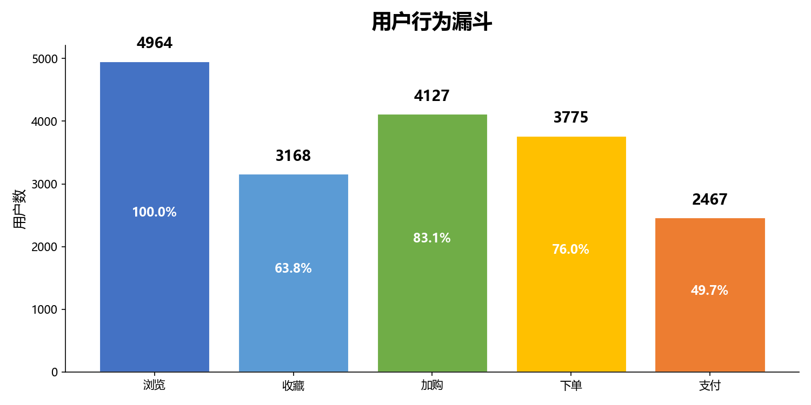
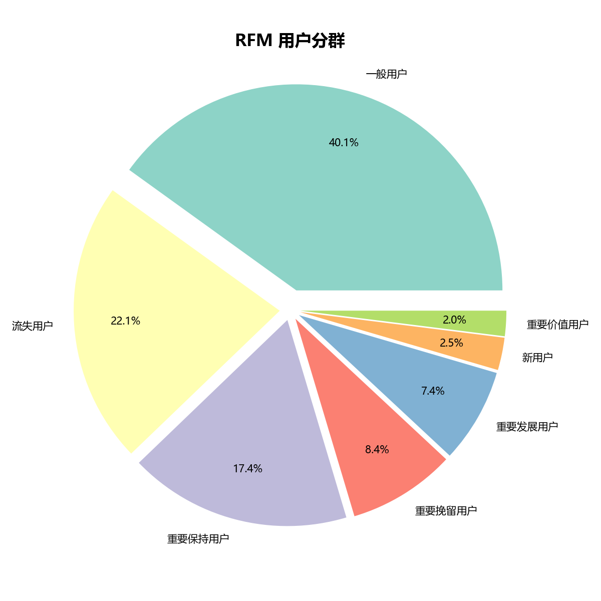
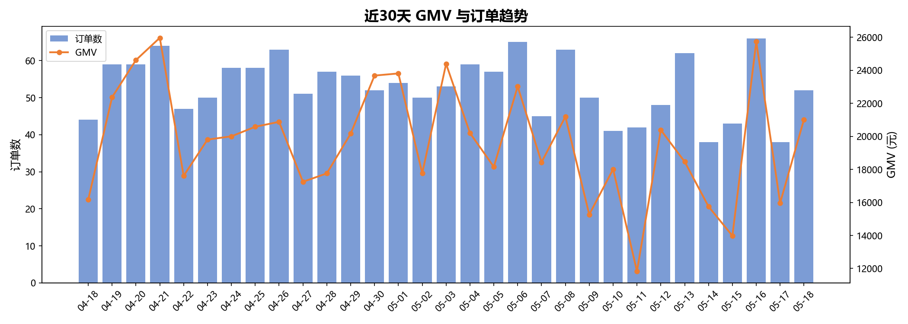
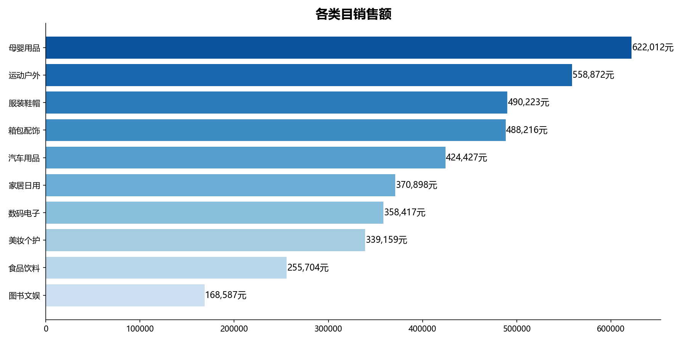
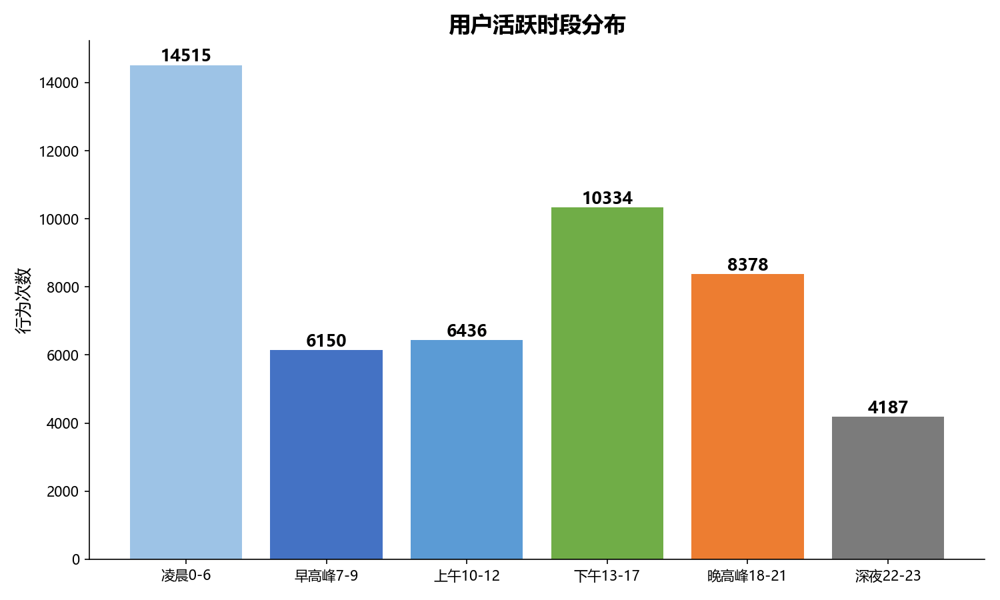
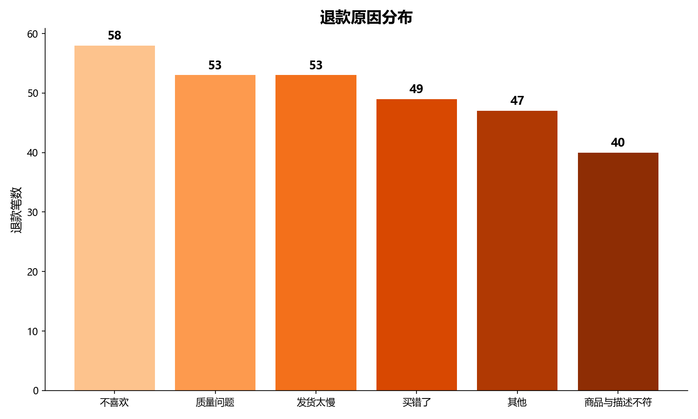
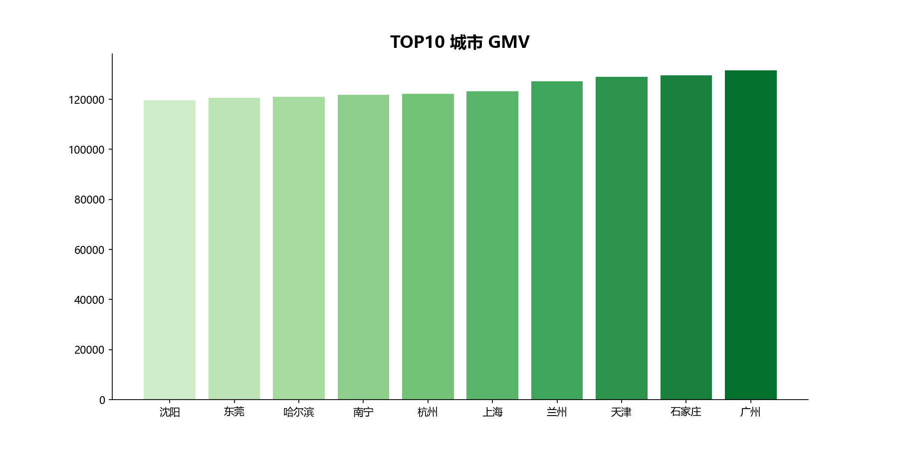
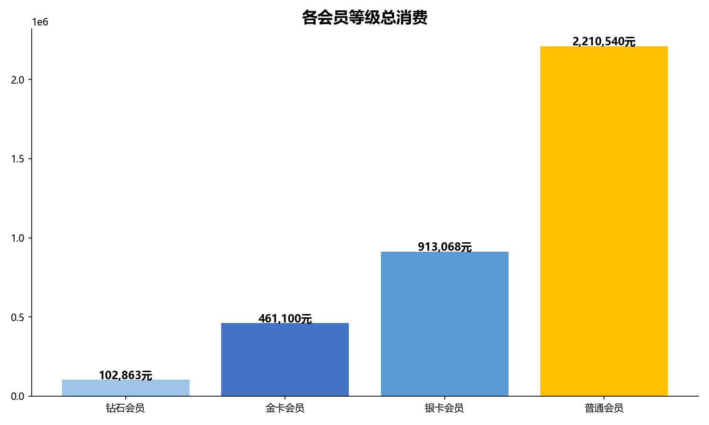

大三下学期独立完成 · 前后做了大概四周
大三上学期学完数据库原理课和Python之后，基础语法都知道了，但总感觉零零散散的，没串起来。正好数据分析岗位是电商行业招人最多的方向，就想找个完整的电商场景，从建库建表、写SQL，到出分析图表、搭BI看板，一条路走下来，看看自己到底能不能独立做一个完整的数据分析项目。
数据没有用现成的Kaggle数据集，而是自己写Python脚本生成的——因为生成数据的过程本身就要求你理解每张表的业务含义和表之间的关系，这比直接拿现成数据学到的多。
ecommerce_db ├── users — 用户表（5000人） ├── categories — 类目（10个） ├── products — 商品（200个） ├── user_behavior — 行为日志（5万条：浏览/加购/收藏） ├── orders — 订单（1万笔） ├── order_items — 订单明细（2.1万条） └── refunds — 退款记录（300条）
7张表，表之间用外键关联。行为表到用户表、订单表到用户表、订单明细到商品表——模拟的是真实电商的数据结构。索引加在了经常用来筛的字段上（user_id、order_date、behavior_type）。
写了11个核心查询，每个对应一个业务问题：
| 分析目标 | 用的SQL技术 |
|---|---|
| 用户行为漏斗（浏览→加购→下单→支付） | CTE + COUNT DISTINCT + CASE WHEN |
| RFM用户分群（6层价值分层） | NTILE窗口函数 + CASE WHEN |
| GMV日趋势 + 7日移动平均 | 窗口函数 AVG OVER + ROWS BETWEEN |
| 品类销售排名 & 占比 | SUM + 子查询计算占比 |
| 时段热力分析 | HOUR() + GROUP BY + 多维度聚合 |
| 退款率分析（按品类/按城市） | LEFT JOIN + 比率计算 |
| 用户留存分析 | 自关联 + 首次行为锚定 |
pandas读数据 → matplotlib画图 → 导出8张PNG。不是什么复杂操作，但是把分析结果从"SQL跑出来的一堆数字"变成了"一眼能看懂的图表"。
把数据导入Power BI Desktop，做了个交互式管理驾驶舱。可以按日期、类目、城市筛选，鼠标点哪就下钻到哪。这个主要是为了让分析结果能"给别人看"——不是只有自己能看懂的数字。








* 所有数据均为Python生成的仿真数据，仅用于学习和展示数据分析能力